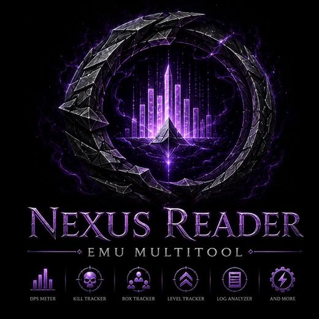

The name does two things the other four could not. Emu Multitool says server-agnostic without naming a server — and Reader happens to state the app's whole promise, which is that it only ever reads. That is worth more than the pun was.
The broken ring is the silhouette worth keeping — nothing else in this genre has it. Inside, three bars: a meter and a trio at once, with the centre one drawn as the obelisk from your art. At 16px the two outer bars drop and the ring plus spire still reads.